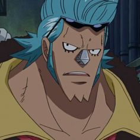
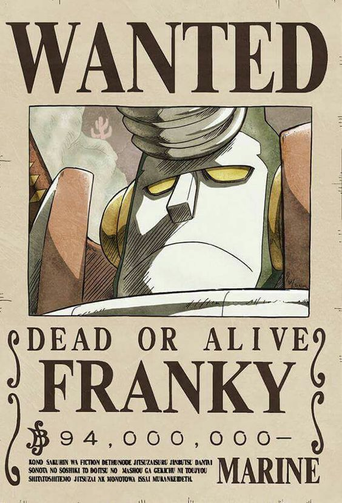
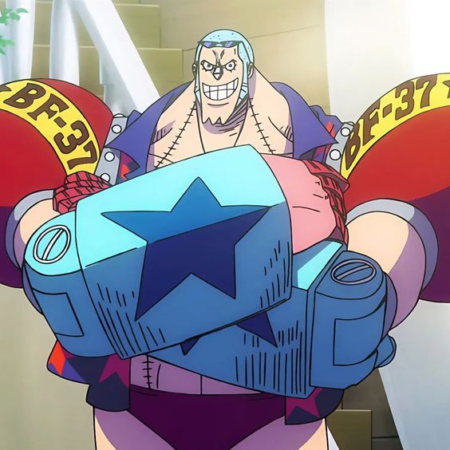
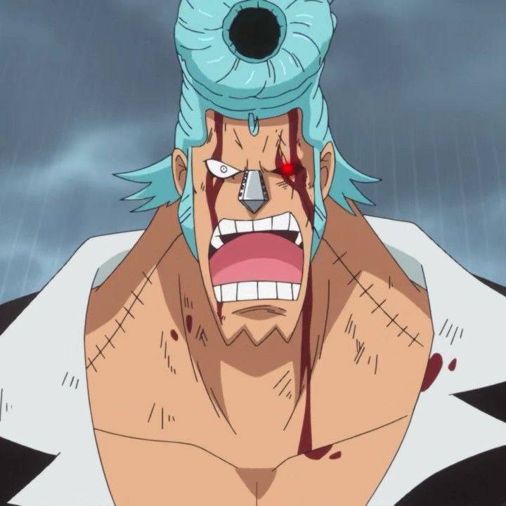

Franky

{kind=link}
También conocido como "Cutty Flam", es un personaje importante en One Piece y miembro esencial de los Piratas del Sombrero de Paja. Es un cyborg con una personalidad extravagante y un talento excepcional para la ingeniería y la construcción. Franky es reconocible por su apariencia única y llamativa. Tiene una figura musculosa, con varios implantes mecánicos en su cuerpo, incluyendo brazos robóticos y una cabeza que puede abrirse para revelar un arsenal de armas ocultas. También es conocido por su peinado característico, con una cresta de cabello azul y gafas de sol grandes.

{kind=link}
Antes de unirse a los Piratas del Sombrero de Paja, Franky era el líder de la familia Franky, una pandilla de agua del distrito de Water 7. Era famoso por sus habilidades de construcción y modificación de barcos. Después de su encuentro con los Piratas del Sombrero de Paja y su trágica historia personal, decide unirse a la tripulación como carpintero y mecánico. Franky es experto en la creación y modificación de barcos, y su objetivo principal es construir el barco más poderoso y resistente, el "Thousand Sunny". Además de sus habilidades como constructor, Franky también es un luchador formidable. Sus implantes cibernéticos le otorgan una gran fuerza y resistencia, y puede desatar poderosos ataques usando sus puños mecánicos.

{kind=link}
Franky es un cyborg con habilidades de construcción y combate en One Piece. Su apariencia extravagante, su ingeniería habilidosa y su lealtad hacia sus compañeros lo convierten en un personaje querido y respetado. Como miembro de los Piratas del Sombrero de Paja, Franky aporta su ingenio mecánico y su fuerza sobrehumana a la tripulación mientras persiguen sus sueños y se enfrentan a poderosos enemigos.

{kind=link}